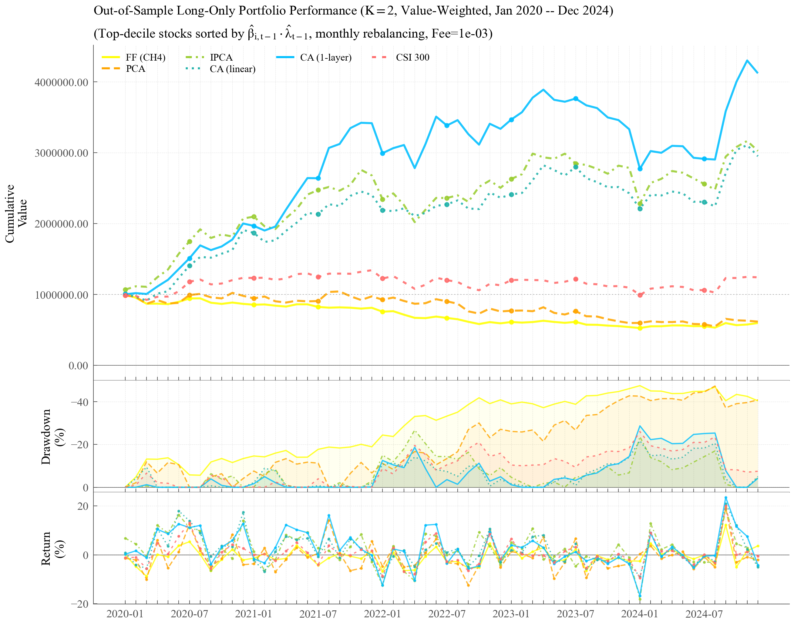
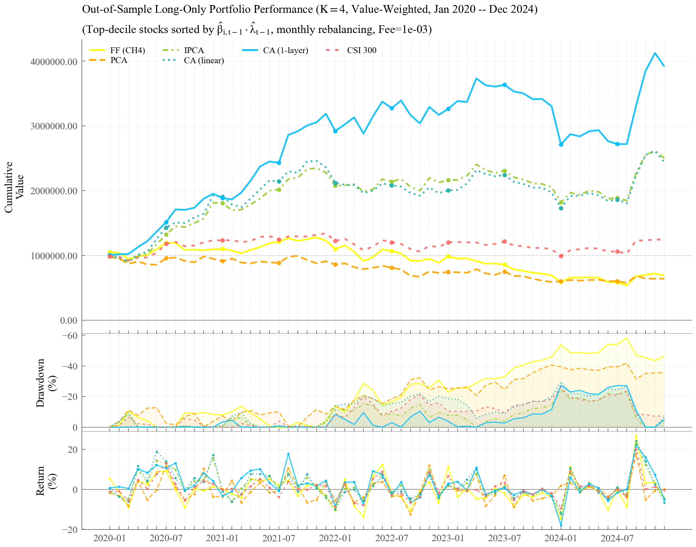
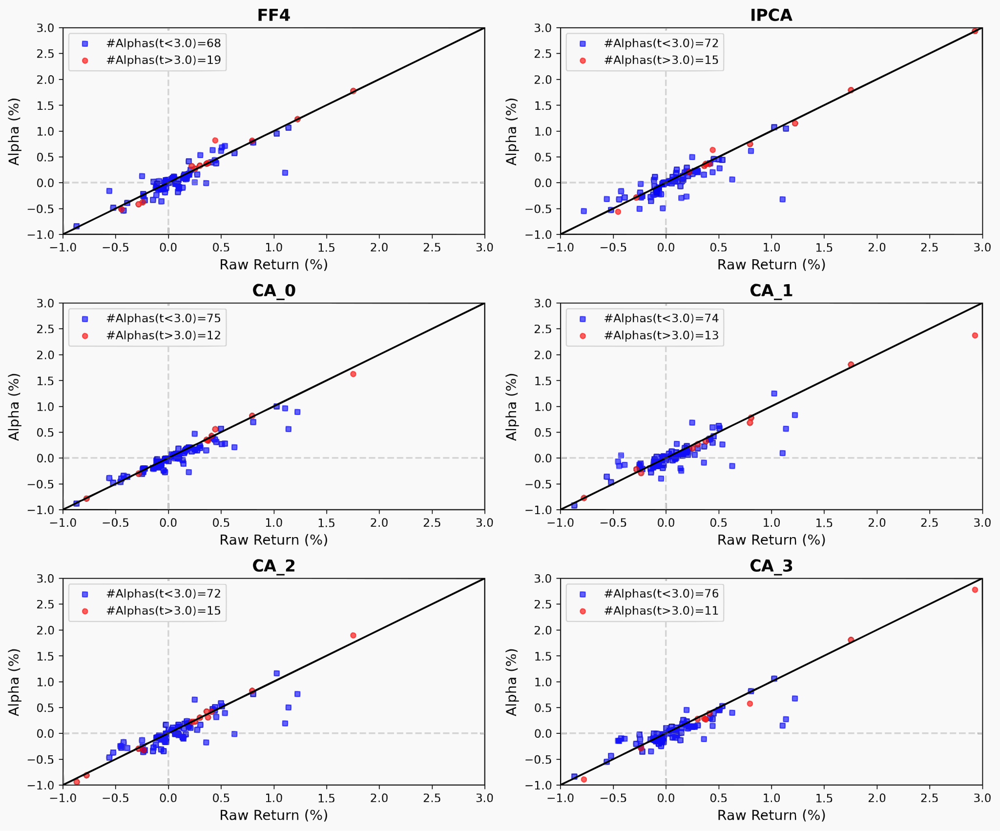
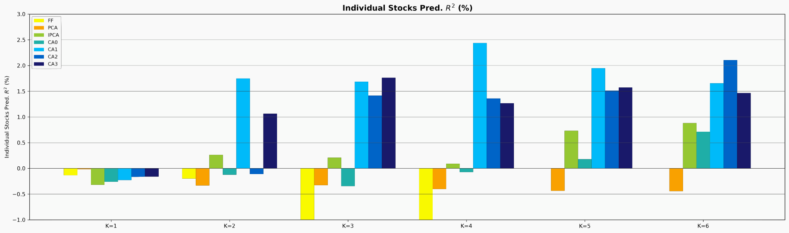

使用条件自编码器（CA）深度神经网络对中国A股5000+只股票进行因子建模与量化回测。 CA(1-layer) 策略在 2020–2024 年实现+312.1% 累计收益， 同期沪深 300 仅 +24.2%。扣除真实交易成本后，年化夏普比率达 1.30。
沪深300同期：+24%
7个模型中最高
10大经济分类
FF·PCA·IPCA·CA×4深度
核心结果：回测净值曲线（市值加权，扣费后）


表现汇总（2020.01–2024.12，市值加权，扣除交易成本）
表A：累计收益（%）
| 模型 | K=1 | K=2 | K=3 | K=4 | K=5 | K=6 |
|---|---|---|---|---|---|---|
| FF (CH4) | −41.2 | −40.3 | −34.3 | −31.1 | — | — |
| PCA | −21.5 | −38.3 | −35.7 | −35.8 | −41.4 | −33.2 |
| IPCA | −32.6 | +202.6 | +177.1 | +150.1 | +170.0 | +199.7 |
| CA (linear) | −28.3 | +195.1 | +99.9 | +144.0 | +160.8 | +178.5 |
| CA (1-layer) | −22.0 | +312.1 | +249.3 | +291.8 | +262.5 | +176.3 |
| 沪深300 | +24.2 | +24.2 | +24.2 | +24.2 | +24.2 | +24.2 |
表B：年化夏普比率
| 模型 | K=1 | K=2 | K=3 | K=4 | K=5 | K=6 |
|---|---|---|---|---|---|---|
| FF (CH4) | −0.80 | −0.78 | −0.28 | −0.30 | — | — |
| PCA | −0.21 | −0.45 | −0.42 | −0.44 | −0.53 | −0.39 |
| IPCA | −0.46 | +1.03 | +1.01 | +0.92 | +0.96 | +1.08 |
| CA (linear) | −0.39 | +1.08 | +0.70 | +0.81 | +0.95 | +1.00 |
| CA (1-layer) | −0.32 | +1.30 | +1.19 | +1.33 | +1.32 | +1.09 |
| 沪深300 | +0.25 | +0.25 | +0.25 | +0.25 | +0.25 | +0.25 |
表C：最大回撤（%）
| 模型 | K=1 | K=2 | K=3 | K=4 | K=5 | K=6 |
|---|---|---|---|---|---|---|
| FF (CH4) | −47.2 | −47.5 | −67.8 | −58.2 | — | — |
| PCA | −46.9 | −47.3 | −44.5 | −41.8 | −48.8 | −47.8 |
| IPCA | −35.2 | −26.7 | −24.5 | −24.4 | −22.8 | −19.9 |
| CA (linear) | −31.6 | −21.7 | −24.4 | −29.7 | −21.2 | −21.9 |
| CA (1-layer) | −31.4 | −28.7 | −27.5 | −27.3 | −25.3 | −19.9 |
| 沪深300 | −26.0 | −26.0 | −26.0 | −26.0 | −26.0 | −26.0 |
注：Top-Decile仅做多组合，月度调仓，市值加权。扣除A股实际交易成本（印花税0.05%卖方、佣金0.025%双向、过户费0.002%双向）。加粗=列最优，绿=正收益，红=负收益。FF限K≤4。
回测图集（K=1~6，市值加权）
这篇文章做了什么
从 CSMAR、RESSET 数据库获取 A 股 2011–2024 年 5447 只股票、87 个公司特征 （估值盈利、成长投资、风险杠杆、动量、流动性交易、会计质量运营效率六大维度），构建 条件自编码器（CA）深度神经网络——编码器将特征非线性映射为时变因子暴露 β， 解码器从收益数据中提取潜在因子，联合优化。在 2020–2024 年样本外期间进行 纯样本外月度调仓回测，扣除 A 股实际交易成本。
技术栈
数据处理流水线
模型体系
| 模型 | K范围 | 估计方法 | 特点 |
|---|---|---|---|
| FF (CH4) | 1–4 | Fama-MacBeth两步 | 特质波动率因子，中国市场适配版 |
| PCA | 1–6 | 渐近主成分 | 无监督统计因子提取 |
| IPCA | 1–6 | 交替最小二乘(ALS) | 特征→因子暴露的线性映射 |
| CA0 | 1–6 | Adam SGD | 线性编码-解码，等价IPCA |
| CA1 | 1–6 | Adam+ReLU | 1隐藏层[16]，最优预测能力 |
| CA2 | 1–6 | Adam+ReLU | 2隐藏层[16,8] |
| CA3 | 1–6 | Adam+ReLU | 3隐藏层[16,8,4] |
正则化：L1惩罚 + Early Stopping + BatchNorm + 10种子集成。 训练框架：递归扩展窗口（训练期2011-2019，测试期2020-2024），纯样本外。 CA0 = IPCA（当激活函数为线性且仅单隐藏层时理论等价）。 所有CA模型因子数K=1-6，FF限于K=1-4（仅4个可观测因子）。
87个特征因子 · 10大分类
| 代码 | 英文名 | 分类 |
|---|
回测方法
每月末：用滚动扩展窗口历史因子收益均值 λ̂t−1 × 个股前月因子暴露 β̂i,t−1 = 预期收益 r̂i,t。 全市场股票按预期收益分为十组，买入最高组（仅做多），持有一个月后全部卖出换仓。 2020年1月至2024年12月，共60个月。
交易成本：印花税0.05%（卖方）· 佣金0.025%（双向）· 过户费0.002%（双向）≈ 每轮10.4bp | 加权：等权(EW) + 市值加权(VW) | 基准：沪深300
因子归因：模型提取的因子是否有经济含义？


稳健性检验
为确保结论可靠，进行了三项稳健性检验：
- 更换缺失值填充阈值（10/14/18）：模型相对排序保持稳定，CA0和CA1始终最优。
- 剔除市值最小30%股票：按 Liu et al. (2019) 去除"壳价值"污染后，CA模型优势依然成立。
- 缩短训练期（9年→5年）：深层网络(CA2/CA3)因过拟合下降更明显，CA0/CA1样本效率最优。